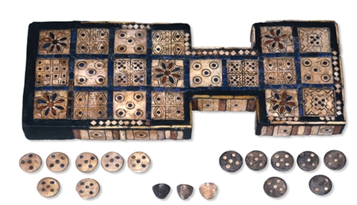

Just kidding—this isn’t CS50.
We aren’t here to teach you “practical” skills, unless you’re planning to start a particularly historically accurate brewery. In a way, however, what we’ve learned in this course applies to practically everything. We’re here to talk about the past, and why it still matters today. To borrow from the syllabus briefly, here’s what we thought about:
We can’t pretend to have discovered the conclusive answers. Otherwise, we’d all be getting our honorary PhDs for solving all of the open questions on human culture. But we got to a good start, by diving into the study of the first humans who lived in a region commonly referred to as Mesopotamia and the Levant, dating back to c. 3500-300 BCE. On this journey—through readings and translations, through excavations and comparisons, through modern-day Iraq, Iran, Turkey, Syria, Lebanon, Israel, and Jordan—we tried to find items of history and culture that differentiate our ideas of present and past.
The ancient Royal Game of Ur from Mesopotamia.
What better way to understand ancient history and culture—truly, all parts of ancient life – than to practice it? Professor Gojko Barjamovic, lecturer on Assyriology in the Harvard Department of Near Eastern Languages and Civilizations, shared the depth of his knowledge in topics ranging from writing and government to medicine and art… and even some ancient fun & games.
Our valiant TFs—Ari, Brenna, Laura, Lidia, and Neelam—led our sections and guided our projects, which are the subject of this website. The links on the left side of the page will direct you to photojournals of each activity. (Replete with tongue-in-cheek captions, of course.) Our peers recreated ancient brewing recipes; restaged the world’s oldest epic poem; and restored artifacts that first passed through human hands millennia ago. And as a class, we broke bread with Professor Nawal Nasrallah, partaking in one of the most enduring elements of community—making and sharing food. (Or, as Harvard students oft say, “grabbing a meal sometime.”)
We, the Platform team, had the honorable job of documenting these adventures. We hope that by reliving these experiences, we can come a little closer to understanding the connections that draw things together. Them and us, there and here, past, present, and future—we’re drawn together in this place. This is the reason why we’re here.